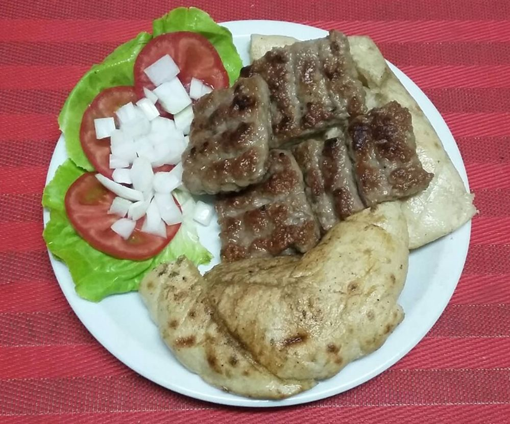

"Banjalucki cevap" specifically originates from the city of Banja Luka, which is located in the Republika Srpska region of Bosnia and Herzegovina. The preparation of Banjalucki cevap is similar to regular ćevapi, but it may have its own unique seasoning or slight variations in the meat mixture to reflect the regional culinary preferences.
It is often served with flatbread, chopped onions, and a red pepper-based condiment known as ajvar, along with other accompaniments like kajmak (a dairy spread) and sour cream. This dish is a popular street food and restaurant item throughout the Balkans and is enjoyed by many people in the region.
